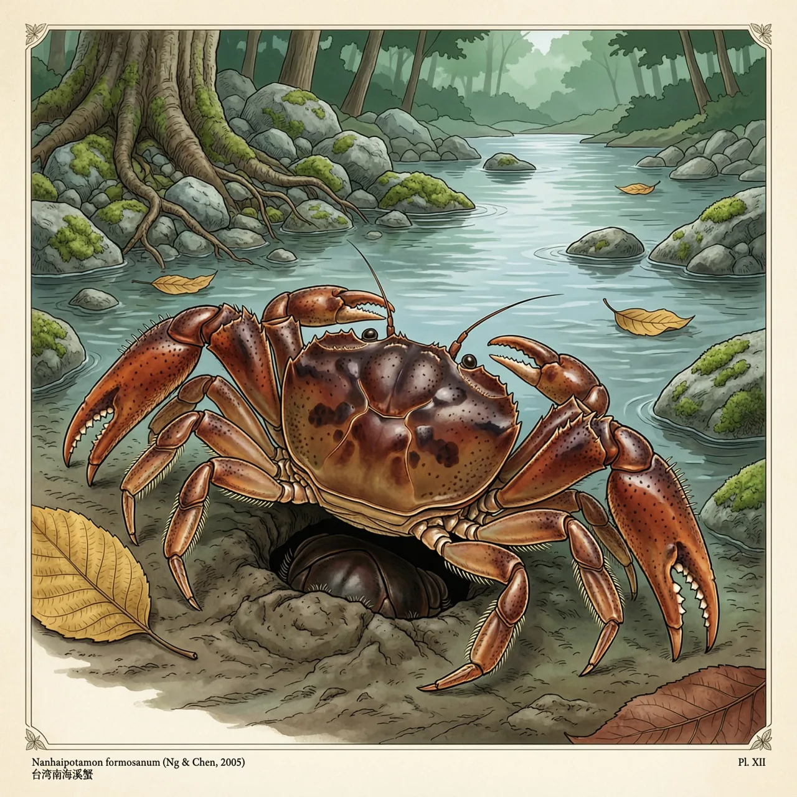

台湾南海溪蟹是台湾特有种的大型淡水蟹，已知分布局限于彰化以南到台南之间的山区溪流，海拔100至500米，栖于溪流石下与水流两岸的泥洞中。它属于溪蟹科，繁殖不经海水阶段，幼体难以跨越陆地扩散到新水系。IUCN列为易危。
彰化以南到台南之间，台湾南海溪蟹住在山溪的两边：一边是溪中的石头底下，一边是水流两岸的泥洞。它的分布区落在海拔100至500米，正是山溪同时给出石块与泥岸的高度；洞挖在岸壁上，里面潮湿，洞口外就是流水。作为台湾特有种的大型淡水蟹之一，这几条溪之外，世界上没有第二个地方有它。
大多数螃蟹的生命史里都有一段海水：母蟹把卵交给潮水，孵化出的浮游幼体随洋流漂走，蜕几次皮之后才在新的岸边落下。台湾南海溪蟹没有这一段。它属于溪蟹科，繁殖在淡水里完成，卵不经海水浮游阶段，幼体阶段也在溪中度过。没有漂浮期，也就没有跨水系的搭便车：相邻两条溪之间隔着一段陆地，对台湾南海溪蟹来说和隔着一片海一样不可通行。
放弃海水阶段让台湾南海溪蟹不必离水繁殖，代价是它几乎走不出出生的那条溪。它的分布零散，一条溪与另一条溪之间的种群彼此隔开；某段溪床被淤平、岸坡被挖走，那处的泥洞整片消失，短期内也不会有别的个体从隔壁水系补进来。易危的评估就压在这种窄域上：现有记录里，它的整个已知世界只有彰化以南到台南之间这一条，按这些记录，往北过了彰化，同样的山溪里就没有它了。